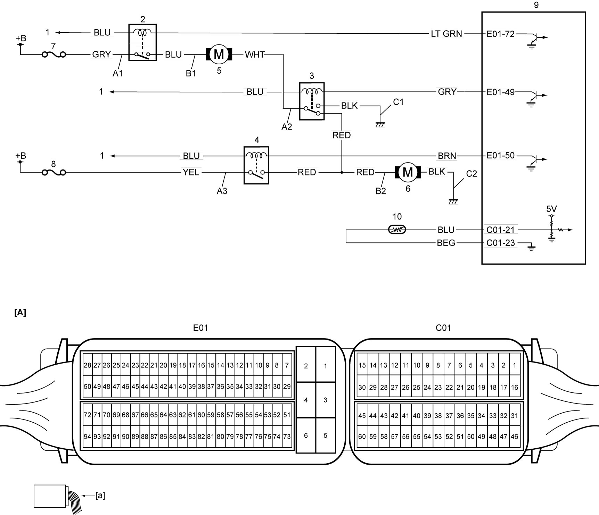

1F
| Radiator Cooling Fan System Check |
Circuit Diagram

 "Expand image")
| [A]: | ECM connector (View: [a]) | C1: | Radiator cooling fan relay No.2 ground circuit | 5. | Radiator cooling main fan motor |
| A1: | Radiator cooling fan relay No.1 power supply circuit (switch side) | C2: | Radiator cooling sub fan motor ground circuit | 6. | Radiator cooling sub fan motor |
| A2: | Radiator cooling fan relay No.2 power supply circuit (switch side) | 1. | To main relay | 7. | “RDTR” fuse |
| A3: | Radiator cooling fan relay No.3 power supply circuit (switch side) | 2. | Radiator cooling fan relay No.1 | 8. | “RDTR2” fuse |
| B1: | Radiator cooling main fan motor drive circuit | 3. | Radiator cooling fan relay No.2 | 9. | ECM |
| B2: | Radiator cooling sub fan motor drive circuit | 4. | Radiator cooling fan relay No.3 | 10. | ECT sensor |
Troubleshooting
NOTE:
•For details of engine cooling fan operation, refer to Cooling Fan Operation Description:K14C.
•Before beginning troubleshooting, read Precautions for Engine (K14C).
•When measuring circuit voltage, resistance and/or pulse signal of ECM, refer to Inspection of ECM and Its Circuits:K14C.
•Before beginning troubleshooting, read Precautions for Engine (K14C).
•When measuring circuit voltage, resistance and/or pulse signal of ECM, refer to Inspection of ECM and Its Circuits:K14C.
| Step | Action | Yes | No |
|---|---|---|---|
| 1 |
DTC check
1)Set ignition “OFF” and connect SUZUKI scan tool to DLC.
2)Set ignition “ON” and check DTC.
Is there DTC(s)?
|
Go to applicable DTC flow and recheck DTC.
|
Go to Step 2.
|
| 2 |
Radiator cooling fan low mode control check
1)Check radiator cooling fan control for low mode.
Is check result OK?
|
Go to Step 3.
|
Go to Step 6.
|
| 3 |
Radiator cooling fan mid and high mode control check
1)Check radiator cooling fan control for mid and high mode.
Is check result OK?
|
Radiator cooling fan control system is in good condition.
|
Go to Step 4.
|
| 4 |
Radiator cooling fan relay No.3 power supply circuit (switch side) check
1)Set ignition “OFF” and remove radiator cooling fan relay No.3 from individual circuit fuse box No.1.
2)Check for proper connection to radiator cooling fan relay No.3 at each terminal.
3)If OK, measure voltage between “A3” circuit and ground.
Is it 10 – 14 V?
|
Go to Step 5.
|
Repair “A3” circuit.
|
| 5 |
Radiator cooling fan relay No.2 ground circuit check
1)Remove radiator cooling fan relay No.2 from individual circuit fuse box No.1.
2)Check for proper connection to radiator cooling fan relay No.2 at each terminal.
3)If OK, measure resistance between “C1” circuit and ground.
Is resistance 3 Ω or less?
|
Go to Step 6.
|
Repair “C1” circuit.
|
| 6 |
Radiator cooling fan relay No.1 power supply circuit (switch side) check
1)Set ignition “OFF” and remove radiator cooling fan relay No.1 from individual circuit fuse box No.1.
2)Check for proper connection to radiator cooling fan relay No.1 at each terminal.
3)If OK, measure voltage between “A1” circuit and ground.
Is it 10 – 14 V?
|
Go to Step 7.
|
Repair “A1” circuit.
|
| 7 |
Radiator cooling fan relay No.1, No.2 and No.3 check
1)Check radiator cooling fan relay No.1, No.2 and No.3.
Is check result OK?
|
Go to Step 8.
|
Replace faulty radiator cooling fan relay.
|
| 8 |
Radiator cooling main fan motor drive circuit check
1)Disconnect radiator cooling main fan motor connector.
2)Check for proper connection to radiator cooling main fan motor at each terminal.
3)If OK, check the following points.
•Resistance of “B1” circuit: less than 3 Ω
•Resistance between “B1” circuit and ground: infinity •Voltage of “B1” circuit: 0 – 1 V (When ignition is “ON”) Is check result OK?
|
Go to Step 9.
|
Repair “B1” circuit.
|
| 9 |
Radiator cooling fan relay No.2 power supply circuit (switch side) check
1)Check the following points.
•Resistance of “A2” circuit: less than 3 Ω
•Resistance between “A2” circuit and ground: infinity •Voltage of “A2” circuit: 0 – 1 V (When ignition is “ON”) Is check result OK?
|
Go to Step 10.
|
Repair “A2” circuit.
|
| 10 |
Radiator cooling sub fan motor drive circuit check
1)Set ignition “OFF” and disconnect radiator cooling sub fan motor connector.
2)Check for proper connection to radiator cooling sub fan motor at each terminal.
3)If OK, check the following points.
•Resistance of “B2” circuit: less than 3 Ω
•Resistance between “B2” circuit and ground: infinity •Voltage of “B2” circuit: 0 – 1 V (When ignition is “ON”) Is check result OK?
|
Go to Step 11.
|
Repair “B2” circuit.
|
| 11 |
Radiator cooling sub fan motor ground circuit check
1)Measure resistance between “C2” circuit and ground.
Is resistance 3 Ω or less?
|
Go to Step 12.
|
Repair “C2” circuit.
|
| 12 |
Radiator cooling main fan motor and sub fan motor check
1)Check radiator cooling main fan motor and sub fan motor.
Is check result OK?
|
Replace ECM and recheck radiator cooling fan system.
|
Replace radiator cooling main fan motor or sub fan motor.
|